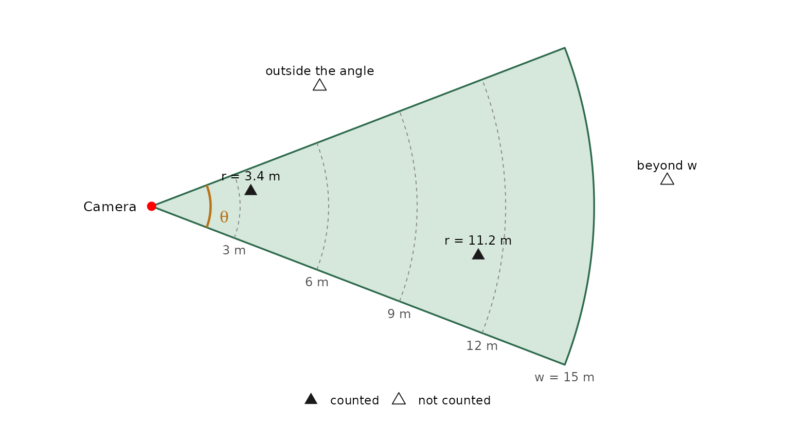
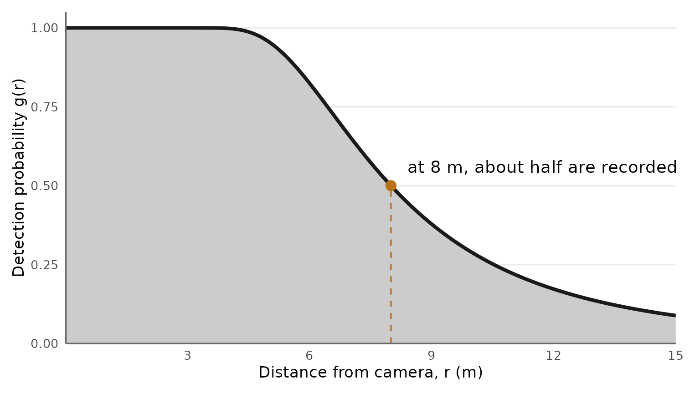
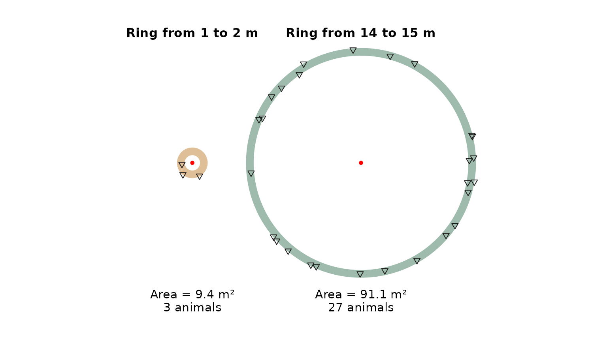
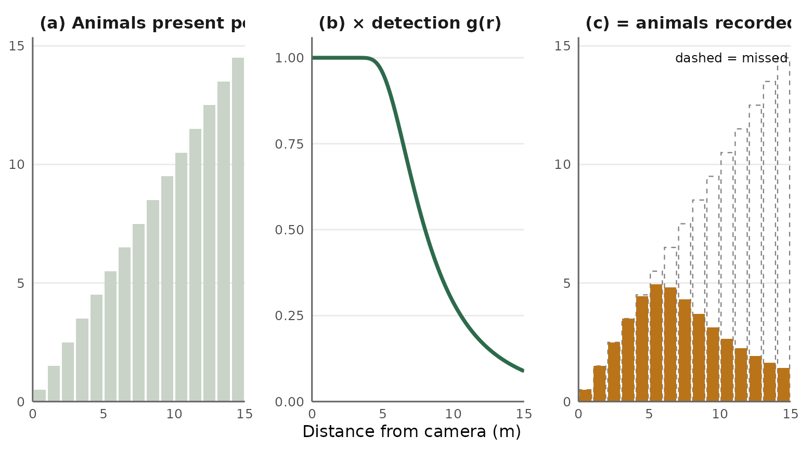
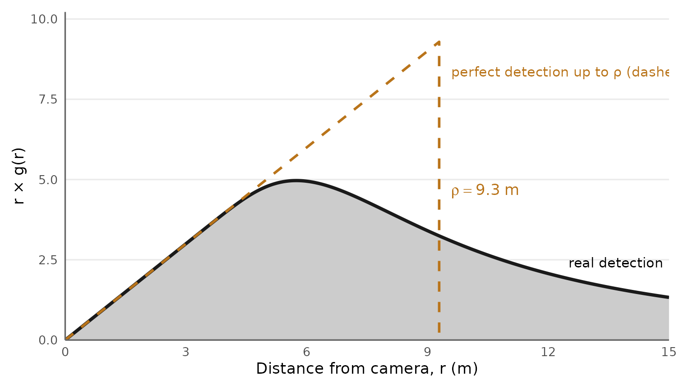
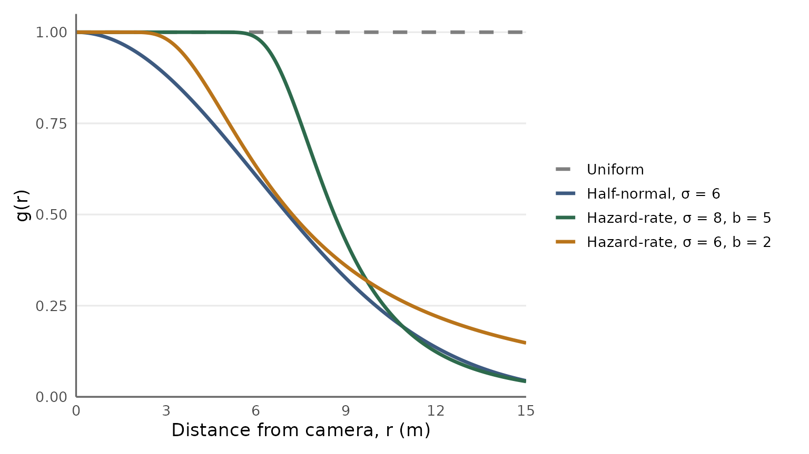
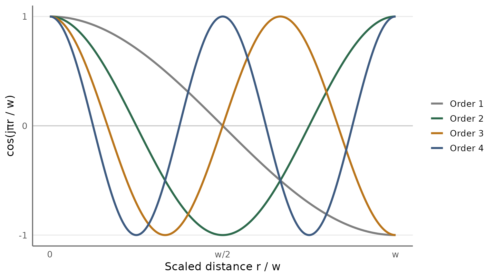
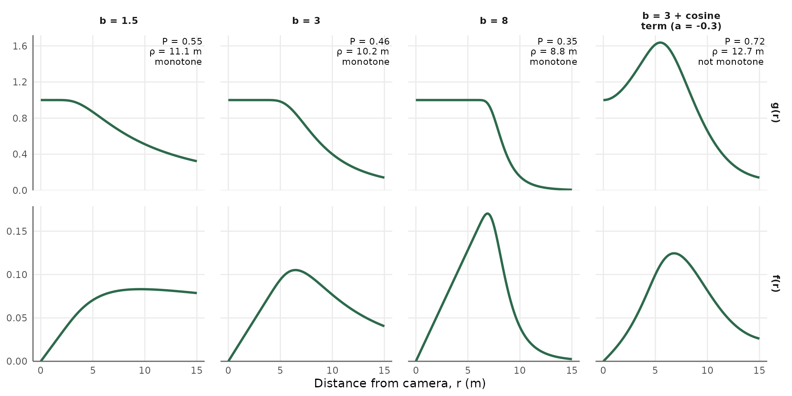
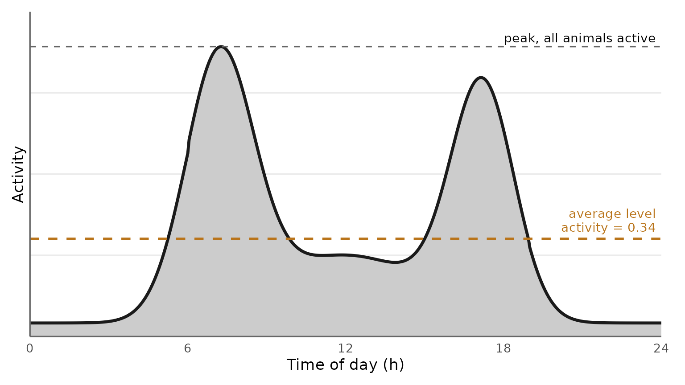
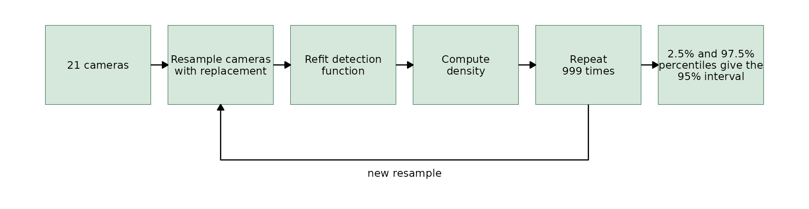

Camera Trap Distance Sampling
Source:vignettes/articles/camera_trap_distance_sampling.Rmd
camera_trap_distance_sampling.RmdHow to estimate animal density using camera videos and distance measurements, even when individual animals cannot be identified. This tutorial includes simple explanations of the formulas behind Camera Trap Distance Sampling (CTDS) and a complete R analysis you can run.
1. The question CTDS answers
You want to know how many animals of a species live in an area, expressed as density (animals per square kilometre). If individuals carry natural marks (stripes, spots), you can recognise them on camera and use capture-recapture. Most species do not. For these unmarked species you need a method that works from counts alone.
CTDS is one such method. It was formulated by Howe et al. (2017), building on decades of distance sampling theory (Buckland et al. 2001). The recipe is short:
- Place cameras at points chosen independently of where animals are.
- At fixed, regular moments (for example every 2 seconds), note every animal visible in the video and how far it is from the camera.
- Use the distances to work out how the chance of seeing an animal falls with distance.
- Correct the raw count for the animals you missed, divide by the area you watched and the time you watched it, and you have density.
The rest of this guide explains why each step is needed, what each piece of the formula means, and how to do it properly.
2. The camera as a counting instrument
A camera trap watches a wedge of ground in front of it, shaped like a slice of pie. Two numbers describe that slice.
- The angle of view, written \(\theta\) (theta). A full circle is 360 degrees, or \(2\pi\) radians. If a camera has angle of view of 42°, it cover the fraction of \(42/360 = 0.117\)
- The truncation distance, written \(w\). This is the distance beyond which we decide to ignore animals, because they are rarely seen and their distances are hard to judge. Howe et al. recommended \(w = 15\) m.

Figure 1: The camera (left) watches a wedge of angle \(\theta\). Rings mark distance from the camera. At one snapshot moment, the analyst records the distance band of each animal in view: here, two animals, one near and one far. Animals outside the wedge or beyond \(w\) are not counted.
Snapshot moments
A camera trap is triggered by movement and then records video or a burst of photos. Distances are not recorded at the moment of triggering. Instead, before the survey, you fix a regular grid of snapshot moments, a time interval \(t\) apart. Example, \(t = 2\) s: at 0, 2, 4, …, 58 seconds past every minute. At each snapshot moment when the camera is recording, you note every animal in view and its distance.
You might ask why not simply record the distance once, when the camera triggers. In fact, a camera triggers when an animal first enters its detection zone, and animals usually walk into the view from its edges, often far from the camera. A trigger distance therefore tells you where animals come in, not where animals are. But what we need is where animals are.
Take one duiker that enters the view at 12 m, walks toward the camera to 3 m, then leaves, staying in view for about 8 seconds.
- Recording at the trigger gives a single distance 12 m. Repeat this for many duikers and the data are full of large distances. Close distances look rare, only because animals are almost never first seen close to the camera.
- Recording at snapshot moments every 2 s gives 12, 9, 6 and 3 m. Each value is the animal’s position at a moment chosen by the clock, wherever the animal happens to be.
A camera that ran for a time \(T_k\) at point \(k\) offers \(T_k / t\) snapshot moments. That number is the temporal effort at the point. The same animal walking past for 10 seconds contributes about 5 observations at \(t = 2\) s. That is expected and correct; section 11 explains the consequence for statistics.
Sampling effort
Combining the angle and the number of snapshots gives the “spatio-temporal” effort at camera point \(k\):
\[ e_k = \frac{\theta}{2\pi} \times \frac{T_k}{t} \]
This is the fraction of a circle watched, times the number of snapshot moments. Total effort is the sum over all points, \(e = \sum_k e_k\).
Example: A camera working 11.5 hours a day (06:30 to 18:00) with \(t = 2\) s gives \(11.5 \times 3600 / 2 = 20\,700\) snapshot moments per day. Over 80 working days that is 1 656 000 snapshots. With a 42° camera, \(e_k = 0.117 \times 1\,656\,000 \approx 193\,000\) full-circle equivalents.
3. Missing animals
Even inside the wedge, not every animal is recorded at a snapshot moment. An animal very close to the camera and in the middle of the view will almost always be on video. An animal 14 m away, half hidden by leaves, often will not, either because the sensor did not trigger or because the image is too poor to identify it.
The detection function, written \(g(r)\), describes this. It is the probability that an animal at distance \(r\) from the camera, inside the wedge, is recorded at a snapshot moment.
- \(g(r)\) is a number between 0 and 1.
- It usually starts at 1 near the camera: animals at or near zero distance are always detected. This is the central assumption of distance sampling, written \(g(0) = 1\).
- It falls as distance grows.

Figure 2: A detection function. Near the camera, every animal is recorded (\(g = 1\)). At 8 m, only about half are. Beyond 13 m, very few are. The shape of this curve is what CTDS estimates from the distances.
If we knew \(g(r)\), we could correct the count. If only half the animals at 8 m are seen (\(g(8) = 0.5\), meaning that, on average, 50% of the animals present at 8 m are recorded at a snapshot moment), each animal seen at 8 m stands for two. So 3 animals seen at 8 m means about 6 were actually there. The whole art of distance sampling is estimating \(g(r)\) from the distances themselves, without any extra experiment.
How can distances alone reveal \(g(r)\)? Because we know what the distances would look like if every animal were seen.
Suppose animals are scattered at random, with no preference for or against the camera. Draw thin rings around the camera, each 1 m wide. The ring from 1 to 2 m is small. The ring from 14 to 15 m is much larger: its circumference is 14 times longer.

Figure 3: Two rings of the same width (1 m) drawn at the same scale around a camera (red point). Animals (dark triangle) are spread at random with the same density in both rings. The ring from 14 to 15 m covers about 10 times more ground than the ring from 1 to 2 m, so it holds about 10 times more animals. If every animal were detected, far more distances would be recorded near 15 m than near 1 m.
So, with perfect detection, a ring twice as far from the camera would hold twice as many animals.

Figure 4: Left: with perfect detection, the number of animals in each distance band would grow in a straight line with distance (more ground in outer rings). Middle: the detection function. Right: what we actually record is the product of the two, which rises, peaks, then falls. The gap between the straight line and the observed histogram is the animals we missed.
Multiplying “how many animals are there at distance \(r\)” by “what fraction of them we see” gives the shape of the distances we record. Written as a probability density:
\[ f(r) = \frac{r \, g(r)}{\int_0^w r \, g(r)\, dr} \]
The top, \(r\,g(r)\), is “ring size times detection”. The bottom is the same thing added up over all distances from 0 to \(w\) (that is what the integral sign \(\int_0^w \ldots dr\) means: the area under a curve). Dividing by it makes the curve a proper probability distribution that sums to 1.
If \(g(r)\) were 1 everywhere, the recorded distances would rise in a straight line. Any shortfall at large distances, compared with that straight line, tells us how detection falls. The histogram of distances therefore contains the information needed to estimate \(g(r)\). This is the reason distance sampling works.
4. From counts to density
The average detection probability \(P\)
Consider the whole disc of radius \(w\). Some animals are near (almost all seen), most are far (many missed). The average probability of detection over the disc, weighting each distance by how much ground lies there, is:
\[ P = \frac{2}{w^2} \int_0^w r \, g(r) \, dr \]
If \(g(r) = 1\) everywhere, the integral equals \(w^2/2\) and \(P = 1\). If detection falls off, \(P\) is smaller than 1. For the duikers, \(P\) was about 0.37: across the 15 m disc, roughly 37% of animals present at a snapshot moment were recorded.
The density estimator
At one snapshot, a full disc of radius \(w\) has area \(\pi w^2\). The camera watches the fraction \(\theta/2\pi\) of it, and sees on average the fraction \(P\) of the animals inside. Over all snapshots and all points, the expected number of observations is density times effectively watched area:
\[ E(n) = D \times \pi w^2 \times P \times e \]
Turn it around to get the estimator of Howe et al. (2017):
\[ \hat D = \frac{n}{\pi w^2 \, \hat P \, e} = \frac{n}{\pi w^2 \, \hat P \, \sum_k \frac{\theta}{2\pi}\frac{T_k}{t}} \]
| Symbol | Meaning | Where it comes from |
|---|---|---|
| \(\hat D\) | Estimated density (the hat means “estimated”) | The result |
| \(n\) | Number of distance observations within truncation | Counting rows in your data |
| \(w\) | Truncation distance (m) | Your choice (section 10) |
| \(\hat P\) | Average detection probability within \(w\) | Fitted detection function |
| \(\theta\) | Camera angle of view (radians) | Camera specification |
| \(T_k\) | Time camera \(k\) was operating and animals were available | Camera logs |
| \(t\) | Interval between snapshot moments (s) | Your protocol |
Distances are in metres, so \(\hat D\) comes out in animals per square metre. Multiply by 1 000 000 for animals per km². Software does this conversion for you.
One more ingredient. This formula assumes every animal is moving and available to be filmed during the time \(T_k\). Animals that are resting, asleep in a burrow or up a tree cannot be filmed at any distance. Section 13 adds the availability correction that handles them. Forgetting it is the most common cause of underestimated density.
Effective detection radius
A useful way to picture \(P\) is the effective detection radius, \(\rho\) (rho). It is the radius of an imaginary disc in which you see every animal and none beyond, that would give the same number of detections as the real, fading detection.
\[ \pi \rho^2 = \pi w^2 P \quad\Longrightarrow\quad \rho = w\sqrt{P} \]

Figure 5: The shaded area under the curve \(2\pi r\, g(r)\) (real detection, weighted by ring size) equals the area of the rectangle ending at \(\rho\) (perfect detection up to \(\rho\), none beyond). For the duikers, \(\rho \approx 9.2\) m with \(w = 15\) m.
The effective detection radius is intuitive and comparable across studies: a camera with \(\rho = 9\) m “effectively” surveys a wedge of radius 9 m. It is also a good sanity check. If \(\rho\) is larger than the distance at which you can still identify the species in your reference videos, something is wrong.
5. Key functions: the basic shapes of detection
We do not know the true detection function, so we describe it with a flexible mathematical shape and let the data choose its parameters. The basic shape is called the key function. Three are standard.
a. Uniform
\[ g(r) = 1 \quad \text{for } 0 \le r \le w \]
Every animal within \(w\) is seen. On its own this is rarely realistic, but it becomes flexible when adjustment terms are added (section 8). It has no parameters.
b. Half-normal
\[ g(r) = \exp\!\left(-\frac{r^2}{2\sigma^2}\right) \]
This is the right half of a bell curve. It has one parameter, the scale \(\sigma\) (sigma), measured in metres. A larger \(\sigma\) means detection stays high to greater distances. At \(r = \sigma\), detection has dropped to 0.61; at \(r = 2\sigma\), to 0.14. The half-normal falls gently from the start: there is no flat “shoulder” near the camera.
c. Hazard-rate
\[ g(r) = 1 - \exp\!\left[-\left(\frac{r}{\sigma}\right)^{-b}\right] \]
It has two parameters: the scale \(\sigma\) (where the drop happens) and the shape \(b\) (how sharp the drop is). With large \(b\) the curve has a wide, flat shoulder near 1, then falls steeply. With \(b\) close to 1 it falls slowly and has a long tail. This shoulder is often realistic for camera traps: close animals are always recorded until the sensor range is approached.

Figure 6: The three key functions over 0 to 15 m. The hazard-rate with \(b = 5\) has a broad shoulder; with \(b = 2\) it declines more gradually with a long tail. The half-normal (\(\sigma = 6\) m) has no shoulder.
Why parameters are fitted on a log scale. In software output you will see estimates such as “scale coefficient 1.74”. That is \(\log\sigma\), so \(\sigma = e^{1.74} = 5.7\) m. The shape \(b\) is also estimated as \(\log b\). Working on the log scale keeps \(\sigma\) and \(b\) positive during fitting.
6. Adjustment terms, order and nadj
A key function may be too rigid for real data. Adjustment terms are small waves added to the key to bend it where the data require. The adjusted detection function is:
\[ g(r) = \frac{k(r)\left[\,1 + \sum_{j} a_j \, A_j\!\left(r/w\right)\right]}{k(0)\left[\,1 + \sum_{j} a_j \, A_j(0)\right]} \]
Take it piece by piece.
- \(k(r)\) is the key function (uniform, half-normal or hazard-rate).
- \(A_j\) is an adjustment function of order \(j\). Each order is a different wave. Distance is scaled by \(w\), so \(r/w\) runs from 0 to 1.
- \(a_j\) is the adjustment coefficient: how much of that wave is added. It is estimated from the data. A coefficient near 0 means the wave is not needed.
- The bottom line divides by the value at \(r = 0\), so that \(g(0) = 1\) always holds.
The three adjustment series
| Series | Name in R | Function of order \(j\), with \(x = r/w\) | Default orders with uniform key | Default orders with half-normal or hazard-rate key |
|---|---|---|---|---|
| Cosine | "cos" |
\(\cos(j\pi x)\) | 1, 2, 3, … | 2, 3, 4, … |
| Hermite polynomial | "herm" |
\(H_j(x)\), e.g. \(H_4 = x^4 - 6x^2 + 3\) | 2, 4, 6, … | 4, 6, 8, … |
| Simple polynomial | "poly" |
\(x^j\) | 2, 4, 6, … | 4, 6, 8, … |
What “order” means
For the cosine series, the order is the number of half-waves across the range 0 to \(w\). Order 1 is one gentle half-wave (it starts high and ends low): a broad decline. Order 2 is a full wave (high, low, high). Order 3 adds a further bend. Higher orders produce finer wiggles.

Figure 7: Cosine adjustment functions of order 1 to 4 across 0 to \(w\). Adding a little of order 2 lifts the curve near the camera and near \(w\) while lowering it in the middle; adding order 3 bends it once more.
Why do the default orders start at 2 for the half-normal and hazard-rate keys, but at 1 for the uniform key? The uniform key is flat, so the order-1 cosine is what supplies the basic decline. The half-normal and hazard-rate keys already decline; an order-1 cosine would only duplicate that and compete with \(\sigma\). So the first useful correction to them is order 2. The polynomial and Hermite series use even orders only, because even functions are flat at zero distance, which keeps the shape near the camera well behaved.
nadj and order in software
-
nadjis the number of adjustment terms.nadj = 2with a hazard-rate key and cosine series means orders 2 and 3. -
orderlets you choose which orders explicitly, for exampleorder = c(2, 4). Usually you leave it empty and the defaults above apply. - If you give an adjustment series but leave
nadjempty, Distance adds terms one at a time and keeps adding while AIC improves. With camera trap data, prefer to setnadjyourself and compare models as in section 12.
Monotonicity
Adjustment terms can make the curve go up with distance, or exceed 1, which makes no biological sense: an animal cannot be easier to see further away. Distance therefore constrains the fit by default (when there are no covariates):
- Strict monotonicity: \(g(r)\) never increases as distance grows.
- Weak monotonicity: \(g(r)\) never exceeds \(g(0) = 1\), but small bumps are allowed.
The check is made at a set of reference distances. When the unconstrained best fit is non-monotone, the constrained fit sits on the boundary and should be treated with suspicion. Howe et al. (2017) discarded their lowest-AIC model for exactly this reason; section 17 reproduces that.
7. Seeing the parameters at work
The figure below shows how the shape parameter \(b\) and an adjustment term change the detection function \(g(r)\) (top row) and the expected distribution of recorded distances \(f(r)\) (bottom row). Each panel gives \(P\), the effective detection radius \(\rho\) and whether the curve is monotone. As \(b\) grows, the shoulder near the camera becomes flatter and the drop after it becomes steeper. A negative order-2 cosine term pushes \(g(r)\) above 1 at middle distances, so the curve is no longer monotone.

Figure 8: The hazard-rate key (\(w = 15\) m, \(\sigma = 8\) m) with three values of \(b\), and with \(b = 3\) plus a negative order-2 cosine term. The top row is \(g(r)\) and the bottom row is \(f(r)\). The last curve rises above 1, so it is not monotone.
8. Truncation and distance bins
Right truncation
Very distant observations are few, hard to measure, and force the detection function to fit a long tail that tells us little. We discard observations beyond \(w\). A common rule is to remove the farthest 5 to 10% of observations, or to truncate where the fitted \(g(r)\) falls to about 0.1 to 0.15. Howe et al. truncated at 15 m because fitted curves became heavy-tailed when farther distances were included; this removed 8% of daytime observations.
Left truncation
Camera traps have a blind zone right in front of them. A camera mounted at knee height may miss small animals passing underneath the field of view, or film only their back. The assumption \(g(0) = 1\) then fails. The fix is to also discard observations closer than a left truncation distance, and assume certain detection just beyond it. Howe et al. found few observations between 1 and 2 m but not between 2 and 3 m, so they left-truncated at 2 m. The analysis then covers the ring from 2 to 15 m.
Look before you truncate. Always plot a histogram of distances with narrow bins first. A dip near the camera suggests left truncation. A spike at one distance suggests measurement heaping (distances rounded to a landmark). A long thin tail suggests right truncation.
Binned distances and cutpoints
From video, you rarely measure exact distances. Instead, before the survey you film a person holding markers at known distances (for example every 1 m from the camera to 15 m, in the centre and along both edges of the view). During analysis you place each animal in a distance interval (a bin) by comparing it with the reference video. The bin edges are called cutpoints. Precision drops with distance, so far bins are wider. Howe et al. used:
cutpoints <- c(2, 3, 4, 5, 6, 7, 8, 10, 12, 15) # 1 m bins to 8 m, then 2, 2 and 3 mWith binned data, the analysis uses only the number of observations in each bin, \(n_b\). The probability that an observation falls in bin \(b\) is the area under \(f(r)\) between its cutpoints, \(\pi_b\). Distance values in your data file can be the bin midpoints; the cutpoints tell the software how to bin them.
9. Fitting a detection function
For given parameter values (say \(\sigma\), \(b\) and any \(a_j\)), we can compute the expected share of observations in each distance bin, \(\pi_b\). Maximum likelihood chooses the parameter values that make the observed bin counts most probable. With binned data the log-likelihood is:
\[ \log L = \sum_{b} n_b \log \pi_b, \qquad \pi_b = \int_{c_{b-1}}^{c_b} f(r)\, dr \]
In words: for each bin, take the log of its predicted share and weight it by how many observations fell there; add these up; search for the parameters that make the total as large as possible. Software does the search. From the fitted \(g(r)\) it then computes \(\hat P\) and \(\hat D\).
One duiker walking past for 20 seconds yields about 10 observations at \(t = 2\) s, all at similar distances. They are not 10 independent pieces of information. This does not bias \(\hat D\) (repeated snapshots of the same animal are exactly what the effort counts), but it does two other things:
- Standard errors computed as if observations were independent are too small. Section 14 fixes this with a bootstrap over cameras.
- Goodness-of-fit tests and AIC think there is far more information than there is, so they favour over-complicated detection functions. Section 12 fixes this.
10. Choosing a model
AIC
The Akaike information criterion balances fit against complexity:
\[ \text{AIC} = -2\log L + 2k \]
where \(k\) is the number of estimated parameters. Smaller is better. Each extra parameter must improve \(\log L\) by more than 1 unit to be worth it. With camera trap data, \(\log L\) is inflated by the repeated snapshots, so this penalty is far too weak and AIC tends to pick models with many adjustment terms.
Overdispersion and QAIC
The amount of “fake” information can be measured by the overdispersion factor \(\hat c\) (c-hat), the chi-square goodness-of-fit statistic divided by its degrees of freedom:
\[ \hat c = \frac{\chi^2}{\text{df}} \]
For independent data \(\hat c \approx 1\). For camera trap data it is often 10 to 30 (for the duikers it is about 19). The quasi-AIC divides the log-likelihood by \(\hat c\):
\[ \text{QAIC} = -\frac{2\log L}{\hat c} + 2k \]
The two-step procedure of Howe et al. (2019)
- Within each key function, compare models with different numbers of adjustment terms by QAIC, using \(\hat c\) from the most complex model of that key.
- Between key functions, compare the winners of step 1 by \(\chi^2/\text{df}\), and keep the smallest.
QAIC cannot be compared across keys because each key has its own \(\hat c\); the second step solves this. Whatever criterion you use, reject models whose detection function is not monotone, and look at the fitted curve over the histogram before trusting it.
In ct R package,
ct_fit_ds(select_model = TRUE, model_params = ...) fits
every combination you list and applies this two-step procedure.
11. Availability: animals that are not there
The density formula assumes that during every snapshot counted in effort, every animal in the population could have been filmed if it were in the wedge. A duiker asleep in a thicket cannot trigger the camera, however close it is. If animals are active only 60% of the time we count as effort, the estimator sees only 60% of them and \(\hat D\) is 40% too low.
The fix is to divide by the availability, \(A\): the proportion of the effort time during which animals are active and at ground level.
\[ \hat D = \frac{n}{\pi w^2 \, \hat P \, e \, \hat A} \]
Three ways to handle availability
Howe et al. (2017) compared three approaches for Maxwell’s duikers:
- Daytime. Count effort only from 06:30 to 18:00, and assume all duikers are active throughout. Density: 10.6 per km². Probably too low.
- Peak activity. Count effort and observations only during the two daily activity peaks, assuming everyone is active then. Density: 14.5 per km².
- Active daytime. Use the daytime data, and divide by an independent estimate of the proportion of daytime spent active (0.64, from captive animals). Density: 16.5 per km².
Estimating availability from the cameras themselves
The times of day at which animals are filmed describe their daily activity rhythm. Rowcliffe et al. (2014) showed how to turn this into the proportion of time active. The idea: fit a smooth curve to the times of detection; assume that at the busiest time of day all animals are active; then the average height of the curve relative to its peak is the proportion of time active.

Figure 9: A daily activity curve estimated from detection times (illustrative, with morning and evening peaks). The activity level is the average height of the curve divided by its peak height: the proportion of the day the average animal is active.
The activity level from a 24-hour activity curve is the proportion of
the whole day spent active. If your effort only covers
part of the day (06:30 to 18:00, 11.5 hours), availability must be
expressed over that window. Duikers are active about
33.5% of 24 hours, almost all of it in daylight, which is roughly 0.335
× 24 / 11.5 ≈ 0.70 of the daytime window. Dividing by 0.335 instead of
0.70 would double the density estimate. In ct, set
cam_daily_effort = 11.5 in
ct_availability().
12. Uncertainty
The estimate \(\hat D\) combines three estimated quantities: the encounter rate \(n/e\), the detection probability \(\hat P\), and the availability \(\hat A\). Each carries uncertainty. The coefficient of variation (CV, the standard error divided by the estimate) of a product or ratio of independent quantities is approximately:
\[ \text{CV}(\hat D)^2 \approx \text{CV}(n/e)^2 + \text{CV}(\hat P)^2 + \text{CV}(\hat A)^2 \]
In practice the first term dominates. For the duikers, 99.8% of the variance came from how much the encounter rate differed between cameras, and only 0.2% from the detection function. Some cameras film duikers all the time; others almost never.
Design-based variance
The encounter rate variance can be computed from the spread of encounter rates among cameras (estimator “P2” of Fewster et al. 2009). This is fast, and it is what Distance reports by default. Because it treats the data as independent snapshots in the detection-function part, it tends to be slightly optimistic.
Bootstrap over cameras
The recommended approach for camera data is the nonparametric bootstrap:
- Draw a new set of cameras, the same size as the original, by sampling cameras with replacement. Some cameras appear twice, some not at all.
- Refit the detection function and recompute \(\hat D\) from this resampled set.
- Repeat many times (100 to 999).
- The spread of the resulting estimates is the uncertainty. The 2.5th and 97.5th percentiles give a 95% percentile interval.
Resampling whole cameras keeps all snapshots of one camera together, so the non-independence of repeated snapshots is automatically respected. Bootstrap intervals are wider than design-based ones: for the duikers the CV rose from 0.27 to about 0.38.

Figure 10: The camera bootstrap: resample 21 cameras with replacement, refit the detection function, compute density, repeat 999 times, and take the 2.5% and 97.5% percentiles as the 95% interval.
When availability is supplied as a fixed estimate with a standard error (the usual case), the camera bootstrap keeps availability at its estimate in every replicate. The bootstrap interval then leaves out the uncertainty in \(\hat A\). Add it back with the formula above: for example, a bootstrap CV of 0.38 and an availability CV of 0.03 give \(\sqrt{0.38^2 + 0.03^2} = 0.381\). With precise availability the difference is negligible; with an uncertain availability it is not.
13. Designing the survey
Where to put cameras
- Place points by a random or systematic design with a random starting point, for example a grid with random origin. Do not target trails, water holes or feeding sites: that breaks the link between the area watched and the area of interest.
- Fix the camera orientation by design (random, or the same bearing everywhere). Small moves to reach a tree are fine; moving toward a known game trail is not.
- Use many points. Because between-camera variation dominates the uncertainty, more cameras improve precision far more than longer deployments. Howe et al. recommended more than their 21 points after obtaining CVs above 0.35.
How to set the cameras
- Mount at a height suited to the species (0.7 to 1.0 m for duikers). Lower cameras miss fewer animals underneath but see less far.
- Use video, or photo bursts long enough to cover several snapshot moments, and allow immediate re-triggering.
- Record reference videos at deployment: a person holding markers at known distances, across the centre and both edges of the view.
- Choose \(t\) between about 0.25 and 3 s. Smaller \(t\) suits fast or rare animals; beyond a point, smaller \(t\) only adds work.
- Note the camera’s angle of view \(\theta\) from its specification.
14. Preparing the data
The analysis needs one table with one row per distance observation, plus one row with an empty distance for every camera that detected nothing (those cameras still contributed effort and must not be dropped).
| Column | Content | Duiker example |
|---|---|---|
distance |
Distance of the animal (bin midpoint is fine), m. Empty
(NA) for cameras with no detections |
4.5 |
object |
Unique identifier of each observation | 1, 2, 3, … |
Sample.Label |
Camera point identifier | A1 |
Effort |
Number of snapshot moments at the point, \(T_k/t\) | 1 738 716 |
fraction |
Fraction of a circle covered, \(\theta/2\pi\) (or angle/360) | 0.117 |
Region.Label |
Stratum name | Tai |
Area |
Area of the stratum, km² (used for abundance) | 40.37 |
Effort is stored as the raw number of snapshot moments; the fraction
of a circle is kept in its own column and ct applies it for you. In the
Dryad files of Howe et al. this column is called
multiplier; rename it to fraction.
For availability, keep a separate vector of detection times (one per independent video or event, not one per snapshot), such as the video start times.
15. Worked example in R with ct
We now reproduce the published analysis of Howe et al. (2017) for Maxwell’s duikers in Taï National Park, Côte d’Ivoire, using the data bundled with ct. There are 21 cameras, 42° angle of view, \(t = 2\) s.
Load and inspect
library(ct)
library(dplyr)
data(duikers)
day <- duikers$DaytimeDistances |> rename(fraction = multiplier) # 06:30 to 18:00
peak <- duikers$PeakDistances |> rename(fraction = multiplier) # activity peaks only
nrow(day) # 11 181 observations, 21 cameras
library(ggplot2)
ggplot(day, aes(distance)) +
geom_histogram(breaks = 0:25, fill = "gray70", colour = "white", na.rm = TRUE) +
geom_vline(xintercept = c(2, 15), linetype = "dashed", colour = "#b9741a") +
scale_x_continuous(breaks = seq(0, 25, 5), expand = c(0, 0)) +
scale_y_continuous(expand = expansion(mult = c(0, 0.05))) +
labs(x = "Distance from camera (m)", y = "Number of observations") +
theme_minimal(base_size = 13) +
theme(panel.grid.minor = element_blank(),
panel.grid.major.x = element_blank(),
axis.line = element_line(colour = "grey40"))Compare the candidate models of the paper
The paper considered half-normal with 0 to 2 Hermite terms, hazard-rate with 0 to 2 cosine terms, and uniform with 1 or 2 cosine terms, selected by AIC. Refitting them gives:
| Key | Adjustment | Terms | ΔAIC | Monotone |
|---|---|---|---|---|
| Hazard-rate | cosine | 2 | 0.0 | No |
| Hazard-rate | none | 0 | 19.0 | Yes |
| Hazard-rate | cosine | 1 | 20.7 | Yes |
| Half-normal | Hermite | 1 | 31.3 | No |
| Half-normal | Hermite | 2 | 36.9 | No |
| Uniform | cosine | 2 | 73.1 | Yes |
| Uniform | cosine | 1 | 78.8 | Yes |
| Half-normal | none | 0 | 131.5 | Yes |
The lowest-AIC model is not monotone, so it is rejected, exactly as in the paper. The best remaining model is the hazard-rate key without adjustments (in bold). Note how AIC rewards adding terms: this is the non-independence effect of section 11.
Fit the chosen model and estimate density
cp <- c(seq(2, 8, 1), 10, 12, 15)
trunc <- list(left = 2, right = 15)
fit_day <- ct_fit_ds(
data = day,
estimate = "density",
key = "hr",
adjustment = NULL, # key only
availability = list(creation = data.frame(rate = 1, SE = 0)),
truncation = trunc,
cutpoints = cp,
n_bootstrap = 999,
seed = 2017
)
fit_day$rho # effective detection radius, m
fit_day$density # bootstrap median, mean, se, lcl, ucl, cvFor “Active daytime”, keep the daytime data and set
rate = 0.64. For “Peak activity”, use peak
with rate = 1.
Compare with the published results
| Availability | n | Paper \(\hat D\) | ct \(\hat D\) | Paper bootstrap 95% CI | ct bootstrap 95% CI | ct bootstrap CV |
|---|---|---|---|---|---|---|
| Daytime | 10 284 | 10.6 | 10.7 | 5.0 to 21.8 | 4.9 to 20.6 | 0.38 |
| Peak activity | 5 865 | 14.5 | 14.8 | 6.1 to 26.9 | 6.7 to 27.1 | 0.36 |
| Active daytime | 10 284 | 16.5 | 16.8 | 7.7 to 34.1 | 7.7 to 32.2 | 0.38 |
The sample sizes after truncation are identical to the paper, the density estimates agree within 2%, and the bootstrap intervals agree within the variation expected between two sets of random resamples. The effective detection radii are 9.2 m (daytime) and 9.5 m (peak), against 9.1 and 9.4 m in the paper.
Estimate availability from the camera data instead
Rather than borrowing 0.64 from captive animals, estimate it from the 806 video start times, expressed over the 11.5-hour effort window:
avail <- ct_availability(
times = duikers$VideoStartTimesFullDays$time,
format = "%H:%M",
n_bootstrap = 100,
cam_daily_effort = 11.5 # effort covers 06:30 to 18:00 only
)
avail # rate about 0.70, with its SELet ct choose the detection function
fit <- ct_fit_ds(
data = day,
estimate = "density",
select_model = TRUE,
model_params = list(
key = list("hn", "hr"),
adjustment = list("cos"),
nadj = list(2, 3),
order = NULL
),
availability = avail,
truncation = trunc,
cutpoints = cp,
n_bootstrap = 999
)
fit$QAIC # step 1: QAIC within each key
fit$Chi2 # step 2: chi-square / df between keys
fit$best_model # selected Distance model
fit$density16. Troubleshooting
| Symptom | Likely cause | What to do |
|---|---|---|
| Few observations in the first 1 or 2 m | Animals pass under the field of view, or are hard to identify close up | Left-truncate just beyond the dip |
| Spikes at particular distances | Heaping at landmarks in the reference video | Use bins whose edges fall between the landmarks |
| Fitted curve with a long, heavy tail | Too many distant observations | Right-truncate at a shorter \(w\) |
| Best model is not monotone | Adjustment terms chasing noise | Discard it; use fewer terms or another key |
| \(\hat c\) is very large (above 10) | Repeated snapshots of the same animals (expected with CTDS) | Select with QAIC and \(\chi^2\)/df, not AIC; use bootstrap intervals |
| Density seems about twice too high | Availability expressed over 24 h while effort covers part of the day | Express availability over the effort window
(cam_daily_effort) |
| Density seems too low | No availability correction for resting animals | Estimate and apply availability |
| Very wide interval | Few cameras, very uneven encounter rates | Add cameras in future surveys; report the interval honestly |
| Some bootstrap replicates fail | Resamples with very few observations | Report the number of failures; more cameras help |
References
Buckland, S.T., Anderson, D.R., Burnham, K.P., Laake, J.L., Borchers, D.L. & Thomas, L. (2001) Introduction to Distance Sampling. Oxford University Press.
Fewster, R.M., Buckland, S.T., Burnham, K.P., Borchers, D.L., Jupp, P.E., Laake, J.L. & Thomas, L. (2009) Estimating the encounter rate variance in distance sampling. Biometrics, 65, 225-236.
Howe, E.J., Buckland, S.T., Després-Einspenner, M.-L. & Kühl, H.S. (2017) Distance sampling with camera traps. Methods in Ecology and Evolution, 8, 1558-1565. doi:10.1111/2041-210X.12790
Howe, E.J., Buckland, S.T., Després-Einspenner, M.-L. & Kühl, H.S. (2017) Data from: Distance sampling with camera traps. Dryad. doi:10.5061/dryad.b4c70
Howe, E.J., Buckland, S.T., Després-Einspenner, M.-L. & Kühl, H.S. (2019) Model selection with overdispersed distance sampling data. Methods in Ecology and Evolution, 10, 38-47. doi:10.1111/2041-210X.13082
Miller, D.L., Rexstad, E., Thomas, L., Marshall, L. & Laake, J.L. (2019) Distance sampling in R. Journal of Statistical Software, 89, 1-28.
Rowcliffe, J.M., Kays, R., Kranstauber, B., Carbone, C. & Jansen, P.A. (2014) Quantifying levels of animal activity using camera trap data. Methods in Ecology and Evolution, 5, 1170-1179.